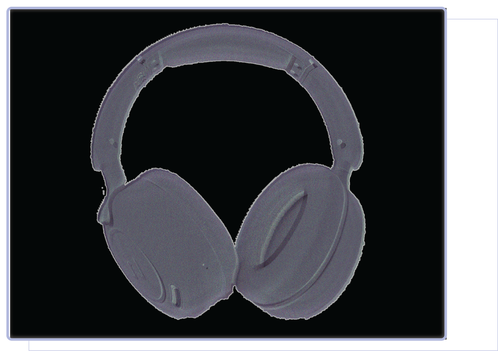
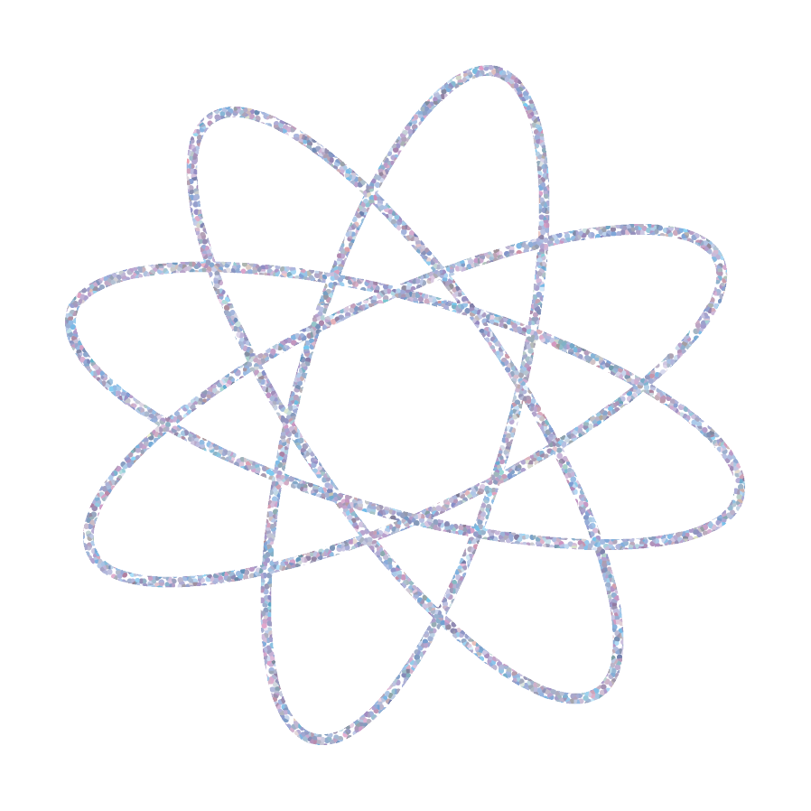

Retro / Vaporwave / Y2K Core
A aesthetic combination of the late 20th century with futurism, characterized by bright and pastel colors, with glitchy digital graphics. Including, chrome and metallic textures like 3d or gradient elements; influences from the 80's to early 2000s and often creating a surreal and imaginary scenery that focuses on the Nostalgia.
 